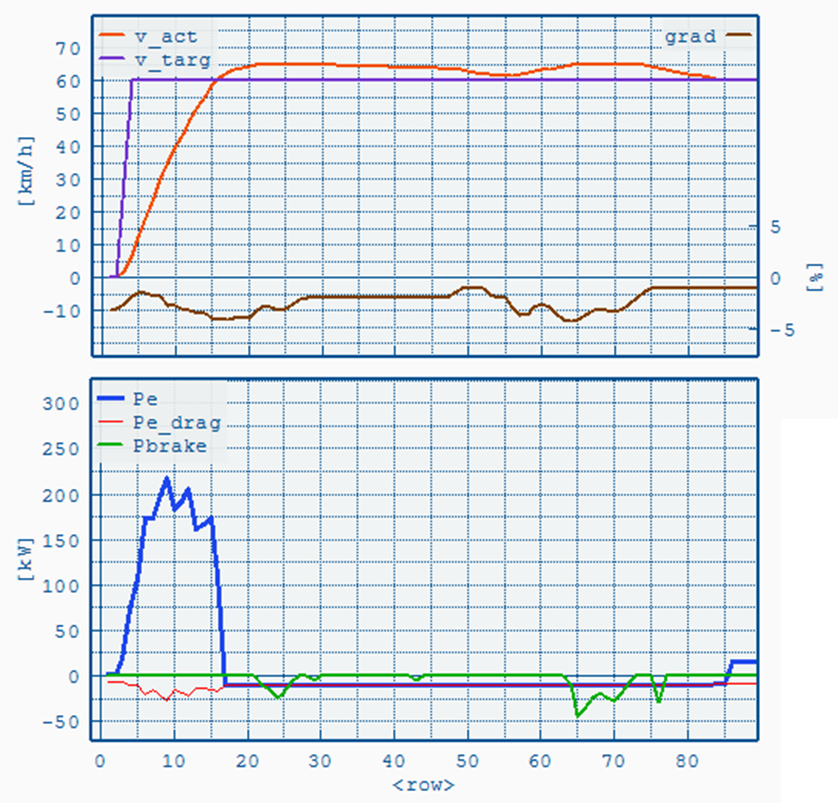
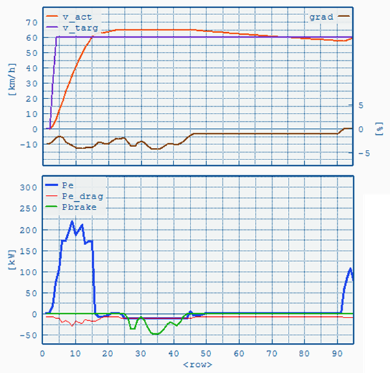

Both functions control the vehicle's
behaviour on uneven road sections (slope ≠ 0) and can be configured in
the
Job File's Driver Assist Tab.
Overspeed is designed to model an
average driver's behaviour without the aid of driver assistance
systems. Eco-Roll represents an optional driver assistance feature. For this
reason vehicles without Eco-Roll should always have the Overspeed function
enabled.
Overspeed
Overspeed activates as soon as the total power demand at the wheels
(Pwheel) falls below zero, i.e. the vehicle accelerates on a negative
slope. The clutch remains closed, engine in motoring operation, and the
vehicle accelerates beyond the cycle's target speed. When the speed
limit (target speed plus
Max. Overspeed [km/h]) is reached the mechanical brakes are engaged to prevent further acceleration.

Example
with target (purple) and actual speed (orange) on the top left axis,
slope (brown) on the top right axis. The bottom graph shows engine
power (blue), motoring curve (orange) and mechanical brake power
(green). In this example Overspeed is allowed until the vehicle's speed
exceeds target speed by 5 [km/h].
Parameters in Job File:
- Minimum speed [km/h]. Below this speed the function is disabled.
- Max. Overspeed [km/h] (relative to target speed)
Eco-Roll
Instead of using the engine
brake (with no fuel consumption) Eco-Roll shifts to Neutral, engine
idling, to minimize deceleration and maximize the vehicle's roll out
distance. During this phase the engine has to overcome its own idling
losses and the power demand from the auxiliaries. The engine is engaged
again if the speed exceeds the speed limits defined by Max. Over-/Underspeed.

Example of Eco-Roll. Target (purple) and actual speed (orange) on the top left axis,
slope (brown) on the top right axis. The bottom graph shows engine
power (blue), motoring curve (orange) and mechanical brake power
(green). The engine is idling while the vehicle rolls freely and
braking when the upper speed limit is reached.
Parameters in Job File:
- Minimum speed [km/h]. Below this speed the function is disabled.
- Max. Overspeed [km/h] (relative to target speed)
- Max. Underspeed [km/h] (relative to target speed)